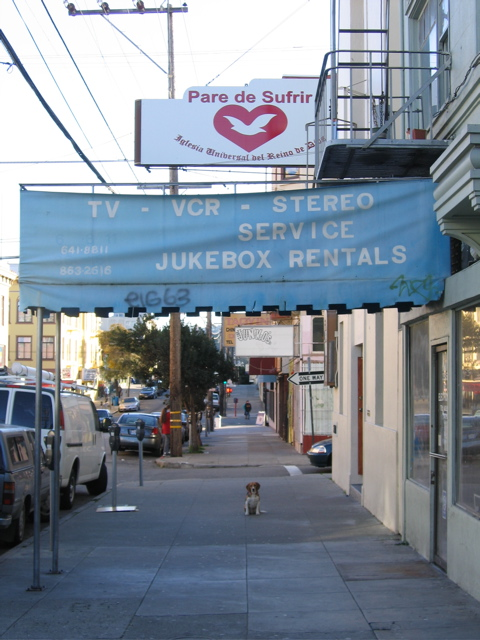

<--Previous
Up
Next-->

Pare de Sufrir, 20th Street
"Stop Suffering" is the motto of the Universal Church of the Kingdom of God, a Pentecostal church founded in Brazil which has congregations throughout the Spanish-speaking world.